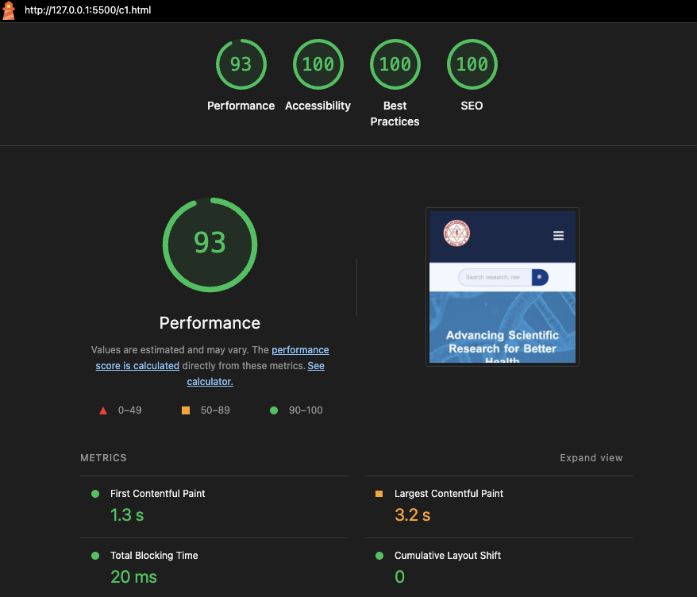
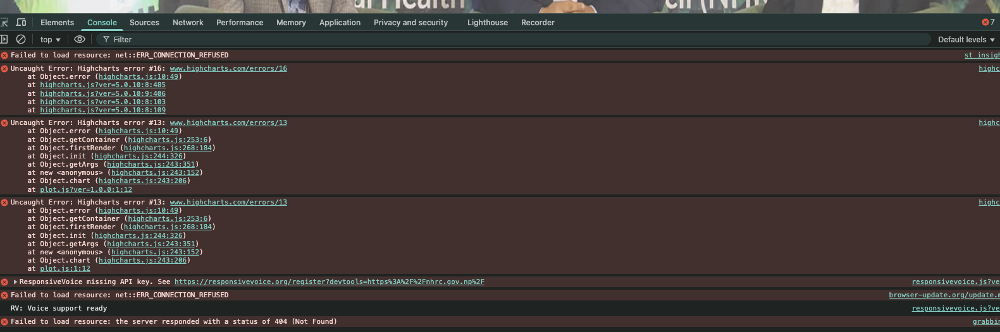

Why revamp? (12 major reasons)
- Modernization (with latest technologies and trends)
- Current version is outdated and cluttered with issues (mentioned in later slides)
- Make usable on all devices - desktop and phones
- Improved user experience
- Support multi-language content(extendable to any number of languages)
- Easier and streamlined content management
- RBAC: Multi-level editors - for respective content type(newseditor, noticeeditor, admin)
- Content Review Flow
- Automatic content archival
- End user bandwidth savings
- Better performance
- Robust Security
Built for Everyone, Everywhere
Modern in spirit, classic in foundation
- ✅ Puts content first – Lightweight, fast-loading pages that focus on information, not flashy effects
- ✅ Designed for everyone – Clear typography, high contrast, and intuitive layouts for all users
- ✅ Respects all users – Works on any device, from smartphones to legacy phones like Nokia S40
- ✅ Prioritizes accessibility – Built with semantic HTML, keyboard navigation, and screen reader support
- ✅ Embraces simplicity – No JavaScript bloat, no broken experiences when features fail
- ✅ Enhances progressively – Modern features (animations, dark mode) are added only if supported
- ✅ Ensures reliability – Fast, secure, and always available — critical for public services
- ✅ Balances innovation & inclusion – Feels contemporary, but never excludes those with older tech or disabilities
Issues in current version
Addressing Critical UX, Performance & Trust Issues
- Unusable on mobile phones - UI breaks, several menus inaccssible on small screens
- Outdated & inaccessible features — not screen-reader friendly, hard to read
- Unoptimized media - Serves large, high-resolution images to all devices — slows load times, wastes data, especially on mobile
- Poor visual hierarchy - Critical notices hidden in collapsible accordions — reduces visibility and delays access to urgent information
- Non-responsive image handling - Images stretched or pixelated — undermines credibility and appears unprofessional on mobile
- Hard to maintain, extend, or audit — increases long-term risk and cost
- Uncertain backend security & maintenance - WordPress setup with unknown plugin origins, no clear update policy, and potential vulnerabilities
- Slow performance
This isn’t just a redesign — it’s a necessary upgrade to meet public expectations for speed, accessibility, and trust.
Lighthouse Comparison

NHRC New Lighthouse Score
NHRC Current Lighthouse Score
NHRC Current Console Status

On a public health site, every error is a potential barrier to critical information.
Clean, reliable code isn’t optional — it’s a public service.
- Harm accessibility: Screen readers and assistive tools may fail when scripts crash
- Break functionality: Even minor JS errors can disable forms, buttons, or navigation for users
- Damage trust: A broken experience makes the site feel unprofessional or unsafe
- Indicate deeper issues: Uncaught errors suggest poor testing, weak error handling, or security risks
Any Questions & Feedbacks?
Thank You.